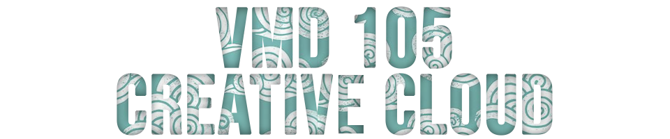
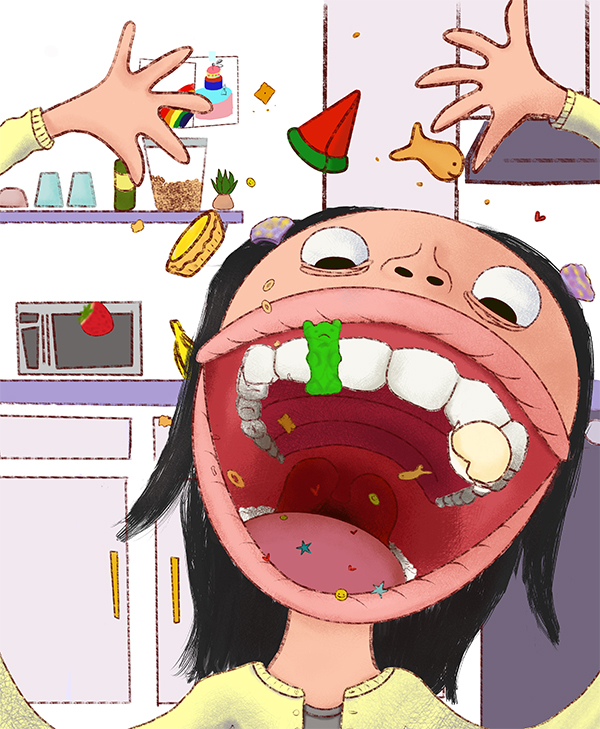

Hello!~ My name is Joanne Wang and I am an art major, studying to become an illustrator.
Above is an example of one of my illustrations. I have learned so much so fast this past semester.
I can take these skills with me and use them together to make something awesome.
At VMD 105 We went over many programs such as Photoshop, Illustrator, Indesign, Animate,
and HTML. I have my favorites but it was interesting to learn a bit of each.